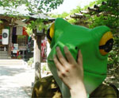
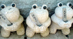
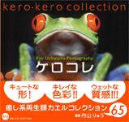
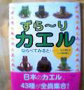
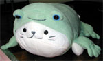

カエル展５成功願いカエル寺参詣！【福岡発福岡かえる展５実行委員長Ｅ３同志記者】個人的にカエルな出会いが沢山あった連休でした♪皆さんはどのように過ごされたのでしょうか。５／３に告知通りスタッフ会議とカエル寺詣でを行いました。今回は新しいスタッフも加わってカエル度も更にアップ！
  カエルも干涸びそうな暑さの中、スタッフとしては１年ぶりに如意輪寺へご挨拶に行きました。また新作カエルが増えてましたよ…年々カエルパワー増大です。今年も大明神をお招きすることになりました。 もしかしたら石のカエルちゃんも会場に来てくれるかも♪遠方からかえる展に来て下さる方は、できればこのカエル寺まで足を伸ばして頂きたいですね〜。あのカエル群を見た感動は実際に行った方にしか……。 ああーそれから、福岡かえる展ポストカードも完成しましたあ！jun-zさんの公式イラストによる福岡かえる展ポストカードが完成しました！！かーなーりープリティです♪ 福岡かえる展５の準備は着々と進んでいます。自分のカエルを会場に展示してもいいよーっていう方がいたら、出展お願いします。詳しくは、公式ページを見ていて下さい。 カエルが『社団法人東京バス協会』のチラシのメインキャラクターに！【埼玉発ケロヒロ同志記者】我らが「カエルさま」は、色々なところで活躍なされていますが、とうとう公共の場にお姿をお見せになりました。何と東京では、『社団法人東京バス協会』のチラシのメインキャラクターになっておられたのです！！それもズバリ、タイトルは、『交通渋滞緩和のために 公共交通機関に乗りかえる 運動にご協力を』と言うものです。 表には、バスを運転するカエル、バスに乗るカエルの家族、バス路線表、裏に目をやりますと、それぞれのバスの乗り方等がカエルくんの案内になっています。カエル様も、公共交通機関をもっと利用しろ！とおっしゃっていますので、我らカエラーも、もっと協力しましょう！！
ケロヒロ同志記者直筆署名@..@ (----) ＠kerohiro＠
カエル化推進のため全バス業界は東京バス協会加盟を！【全国かえる奉賛会】公共交通機関に乗りカエル！きょうから、マイカーを廃棄して東京バス協会所属のバスに乗ろうではないかあああ。九州のバス会社は、カエルロゴ入れたところがないので、この際、福岡の路線にも進出してほしいぞ。
または、大王の故郷福岡の西鉄と昭和バスは、あすから東京バス協会に加盟してくれええええっ！頼むよ。
カエルワールド『ケロコレ』発売！ 【東京発Chiaki様】出版を手がける株式会社碧天舎（社長：服部 良一）では、生物写真家として活躍中の 内山りゅう氏 撮影による異色なカエル写真集『ケロコレ』（定価1800円、B5判変型）を全国の書店で発売中です。世界にカエルは4000種類存在するといわれています。鳥やヘビなど天敵に狙われないように周囲に擬態して目立たないように活動する種類もあれば、1ｇで10万人を殺せる猛毒をもつ自分をアピールするかのように色鮮やかなものもあります。そして決して人間には作り出せない奇抜な色彩、体型、質感に魅せられるファンが多いのも事実です。 この写真集ではそんな小さなカエルたちの美しさ、愛らしさに徹底的にこだわって65種類を選んで撮影し構成しました。カエルの持つ危険な魅力を存分に堪能できること間違いありません。 撮影した内山りゅう氏は1962年東京生まれで現在は和歌山県に拠点をおいています。東海大学海洋学部水産学科を卒業後、写真家として活動を開始。生物写真、特に両生類・爬虫類の分野では日本で第一人者といえる存在です。写真集はこれまでに『決定版 日本の両生爬虫類』（平凡社、2002年）など多数。本写真集はカエルを知り尽くした内山氏の本領発揮であるとともに、新境地を開拓するものといえます。
カエル出版物続々登場！ 【日本発ようくん同志記者】「ずら〜りカエルならべてみると…」（写真松橋利光 文高岡昌江 アリス館￥1500）を買いませう！子供向けの絵本？ですが、前足だけずら〜りとか、後ろ足だけずら〜りとか、後ろ姿だけずら〜り（とってもらぶり〜です。）中々ありません。
おたまじゃくしの頃も載ってます。最後に生息地やら特長やらも載っていて勉強にもなります。是非！一家に一冊！
「カエル探偵団」発見！【福岡発ひさよ同志記者】「カエル探偵団」というのをご存知でしょうか。「NGOサポート グッズカタログ」2003・春夏号（自然保護472号付録）というのに紹介されていました。
なお、このカタログには、「カエル手人形」や、「カエル指人形」「カエルピンバッジ」に「CDブックス・蛙の合唱」、カエルのシステム手帳リフィルとか、かえるくん（いわむらかずお）のランチセット、その他カエルの図鑑がいくつも紹介されていて、目からよだれが飛び出してしまっています。
このカタログは、ここから請求できます。
興奮して眠れぬカエル枕！ 【日本発ケロポン同志記者】大王様に謹んでご報告いたします。 ラブリーなかえるグッズを手に入れました。その名は”しろたん変身枕 カエル”カエルに変身したいしろたんですしろたんというキャラクターの枕に蛙のカバー型着ぐるみです。大きさは大中小三種類。今日ゲットしたのは大で1980円なんとお買い得！ロマンチックガーデンと言う店で入るのに中三の娘をだしにしないと入れないラブリーさ爆裂の店です。 【全国かえる奉賛会】別の動物が、カエルの着くるみを着ているって設定のぬいぐるみは、けっこう多いけど、いったいどうして、カエルに変身したがるのだろううう。 みんなきっとカエルになりたいんだよね。だってさあ。カエルになっていれば、ナンダ、カエルかあああって、みんな油断してくれるかもしれないからかな。
大王は、カエルパジャマももっているので、ラブリーな枕といっしょに爆睡できるってもんだぜ。
|
メールマガジン登録
メールマガジン解除
Powered by


かえる古新聞過去に取り上げた記事を見出し付きで一覧したい人は、ここをクリック◆創刊号を見る◆先週号を見る◆話題の号を見る◆かえる新聞の昔を読む
|
私も入っています。。全国かえる奉賛会
大王様に会うには、このバナーをクリック。ずっと奥に写真館があるぞ。全国かえる奉賛会に入会するには、自分のホームページのどこかに、下の部分を追加するとバナーがリンク付きで表示されるぞ。どんどん入会しましょー |


|